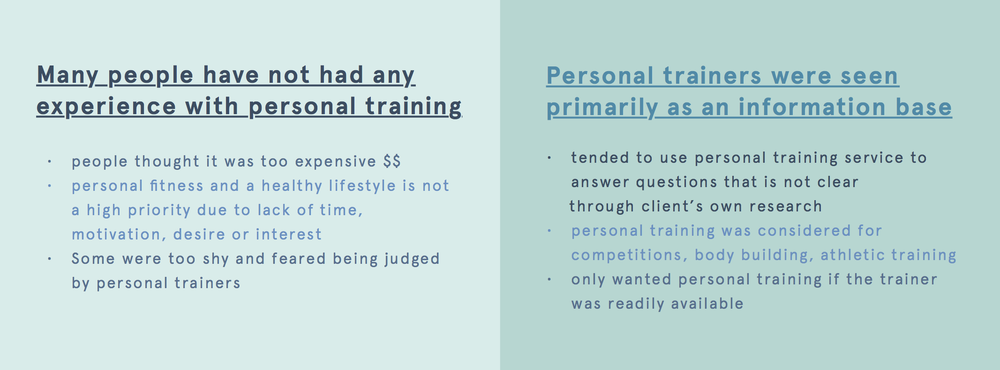
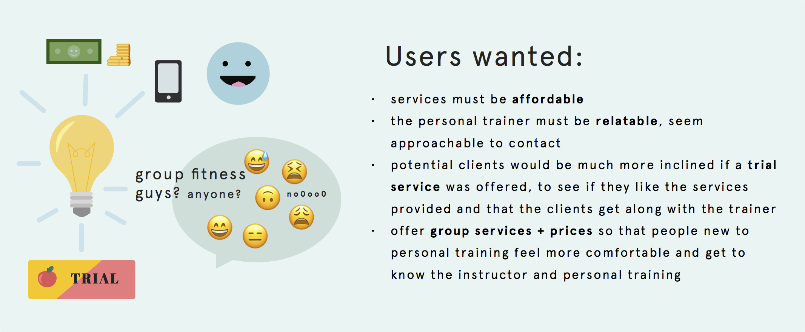
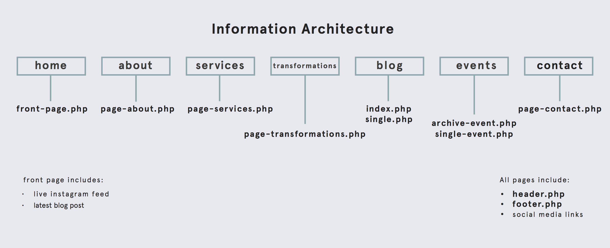
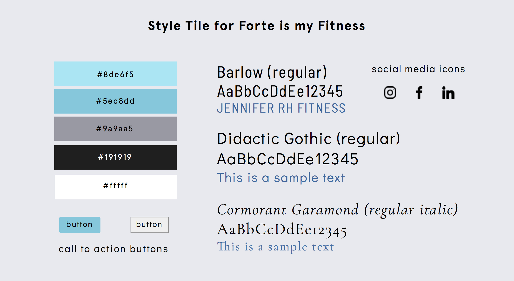
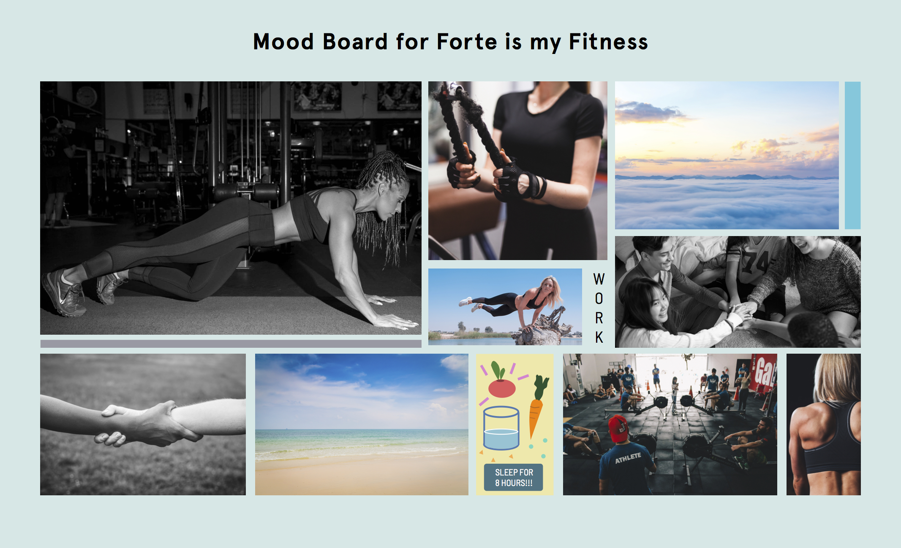
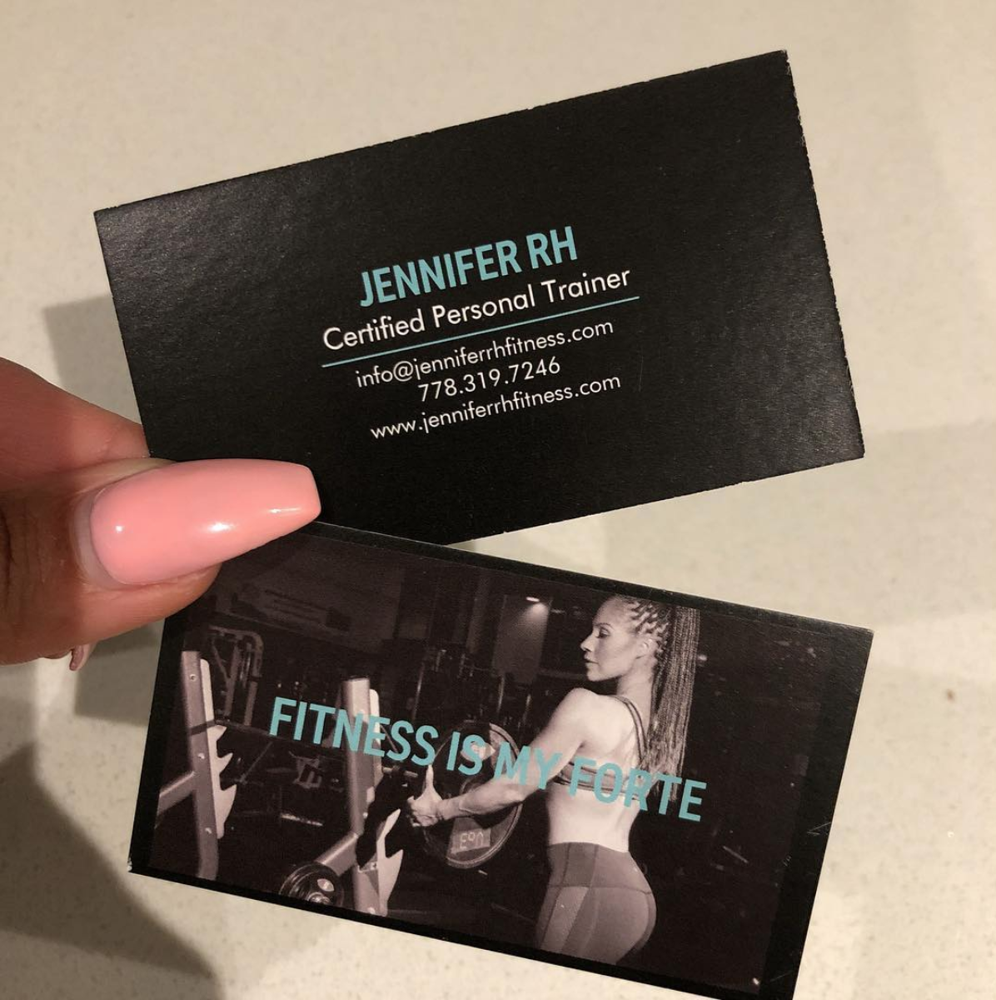

Fitness is my Forte
UX, Brand Design & Site Development
BCIT client project
(4 weeks)
Fitness is My Forte is a website created for Jennifer RH, a local personal fitness trainer with no previous website or brand identity.
Over the last few years, Jennifer had been thinking about opening her own fitness training business after several requests from friends and family, and has decided that this was the year to begin it.
Introduction
The team.
Role
UX design, visual design,
product research, development
Client
Jennifer RH
Members
Abe, Tim, Hiroshi, Anthony and myself
Year
2018
The context.
The website is targeted towards young individuals who are getting into fitness and towards busy parents, especially moms. Jennifer emphasized that she wanted to show parents that it was possible to maintain a healthy lifestyle while working + raising a family.
Business goals:
1. A dynamic, easy to maintain site where information about her services could be easily discovered, updated, and understood
2. The goal is to ultimately have potential clients to contact Jennifer and speak to her one on one about her services
Site goals:
* Visual design + branding
* Organized, easy to find content
Discovery
The exploration.
The primary goal for Jennifer's site was to display her services, and offer a way of contact for clients to reach her. Knowing this, we began with a content-first approach in creating her product.
We asked potential users with an initial survey where 21 random individuals gave their input on personal training and what they would like to see on a site offering fitness services. These individuals ranged from 20s - 30s and 7% were parents.
Our results informed us of several things:
Our idea.
When we asked potential users to reflect on what would interest them in actively seeking out a personal trainer or training service, many of them pointed out that:
To further help us understand what other fitness trainers offered, we looked at several sites (some examples here, here and here) for competitive analysis and to gain insight into the fitness industry.
From this I created an information architecture that considered what Jennifer wanted, and what was commonly found on other fitness sites.
One different thing she mentioned was she wanted to include a transformation page so that clients can see her services work, and have a blog for SEO purposes.
Creation
Brand guide.
As the project did not include custom brand design, we decided to create a style tile as a foundational basis for ensuring design consistency through out the entire website.
 Looking back, I think it could have been better to create a more cohesive brand design if we were more firm with our suggestions of which colors and designs work optimally with one another versus letting the client choose the colors.
Desktop wireframes.
Our primary focus for this site was focused on desktop development, although it would have been smarter to begin from mobile first design.
Following on how the IA was laid out and after several reiterations, we decided on creating straight forward wireframes with the main purpose of directing the user flow to go check out who Jennifer is as a trainer, and end up contacting her for her services.
Mockups.
Based off the new wireframes and IA, we integrated it with the brand guidelines to create a mockup of the finished product.
While Jennifer was happy with our mockups, I personally thought that the mockups could be a little more uniquely designed to create a more creative user experience.
Here is another version of how the site could have looked, if we only had the time and skills then to develop it!
Development
Implementing WordPress.
Once the mockup designs were approved with Jennifer, we went ahead with development. We created a custom WordPress site using a starter theme, creating our own taxonomies and hierarchies. Having a Wordpress site would allow Jennifer the flexibility to change and manager her content as her business grew and changed.
Deliverables
After the site was developed on our local sites, it was time to hand it off to the client on her own hosting site.
In our last week of class, we showed Jennifer in person how to use the WordPress CMS. She really liked the site when she saw the complete project, although we weren't 100% satisfied with some the bugs that remained. Despite small issues (which we ended up fixing after the program ended), we took it that she liked her site as she based her business card design off of what we created!
And that wraps up our one month client project, check out the live site here!
Reflections
In the end, there were several things I still would have liked to have changed if allowed the time and if our design/development skills were stronger.
While the starter theme set up a solid base for us to create the site, we faced other issues that we did not expect. Some of the bigger issues included poor communication, working inefficiently, and struggling with unfamiliar softwares.
For this project, we decided to style the site in SASS and used gulp to automate our development workflow. We were all unfamiliar using these tools, which had an initial learning curve. Once that was figured out, we also began experiencing merge conflicts as we never really worked in a group setting to create a dynamic site together before. But then we adopted the scrum approach,which really cleaned up our workflow!
However, I am immensely proud of my team and I for creating our first ever 'proper' website! It gave us a chance to see what a front-end developer does on a daily basis as well as what freelance work might be like!
Overall, we hope that Jennifer's fitness service will continue to grow, especially with the addition of an online platform!
Thanks for reading!
Other projects